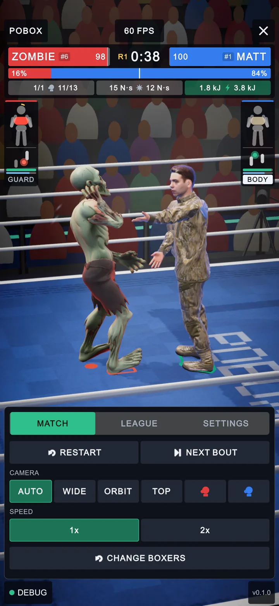
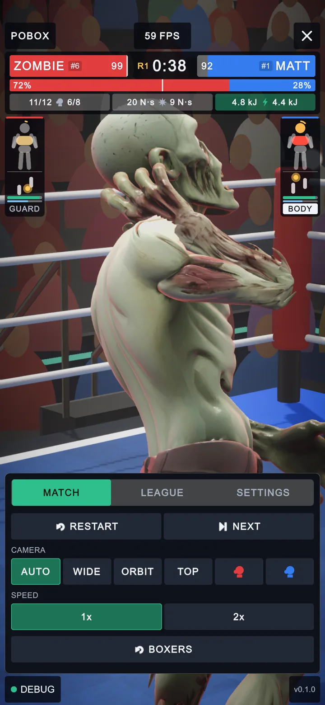
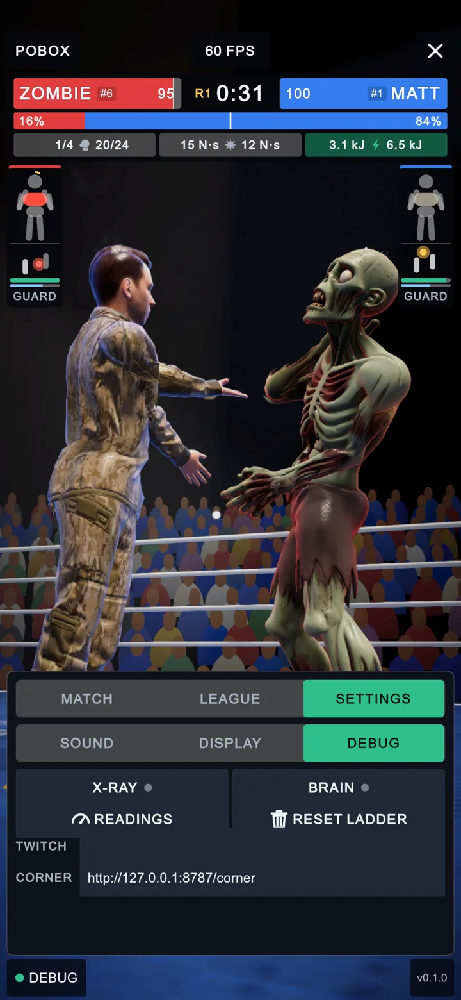
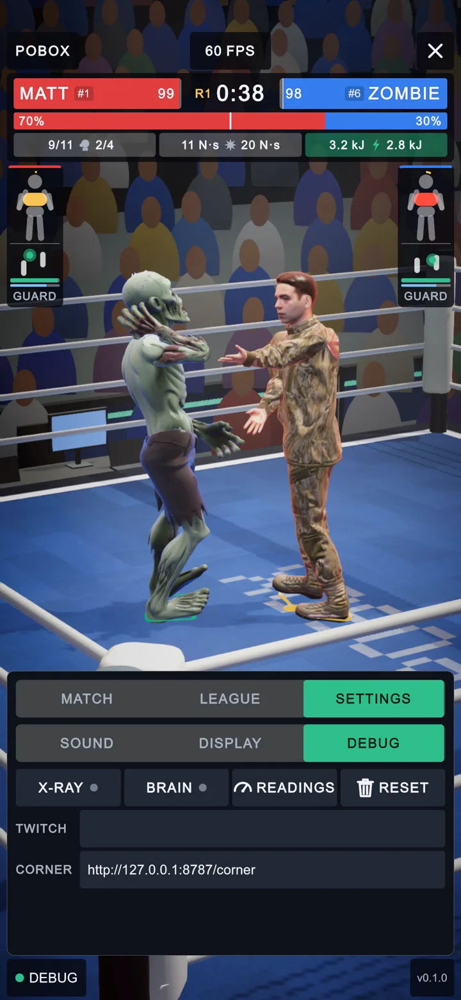
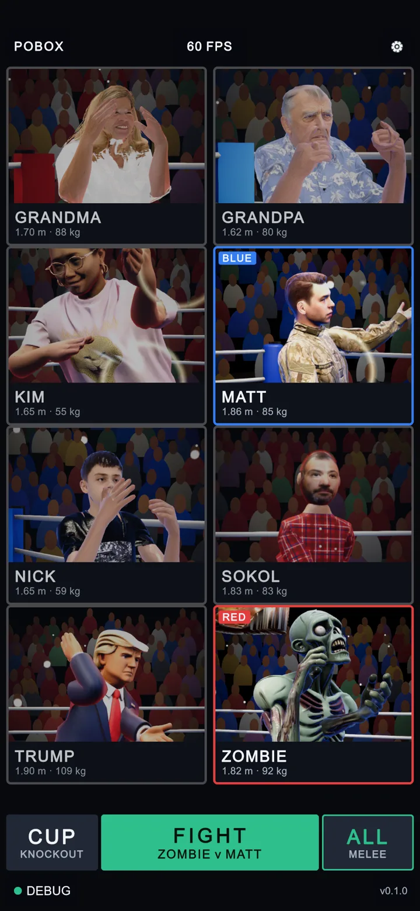
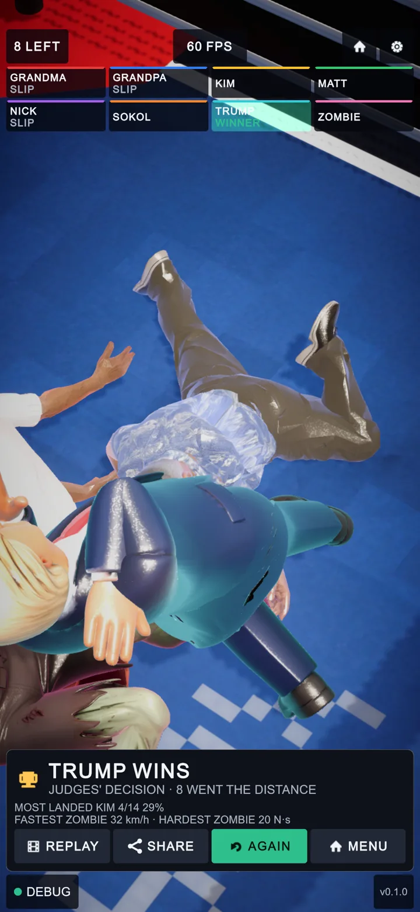
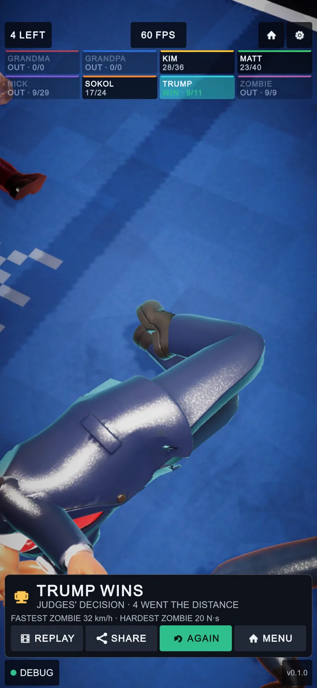
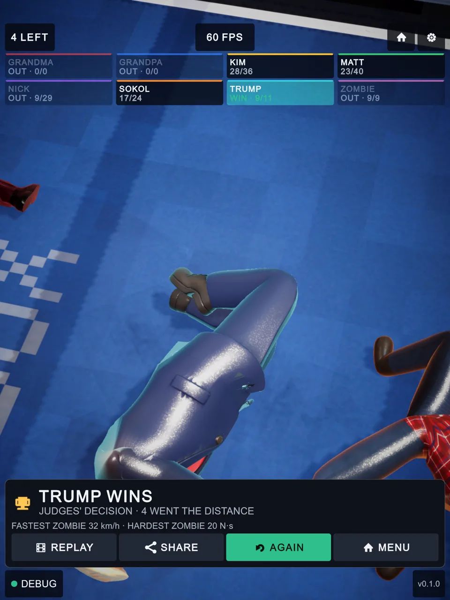

PoBox UI integrity pass, 2026-10-16
The ten mobile-portrait options, all at 1080 x 2340 (19.5:9). Before (left) was taken before any change tonight, after (right) once the tests passed. The yellow pins match the numbered changes under each pair.
What was done
| # | Option | Outcome |
|---|---|---|
| 1 | Android back button | Done: Back() on the menu, the arena and the free-for-all |
| 2 | More of the state flow under test | Done: second StateFlowTests test (cup, NEXT, replay cut short, leaving mid-count and in bullet time); found and fixed a clock left in slow-mo |
| 3 | Scene integrity test | Done: SceneIntegrityTests, 4 scenes plus a self-check |
| 4 | Working tree clean-up | Done: recovery scene quarantined, Android define committed |
| 5 | More screen shapes | Done: 16 shapes (was 10), tablet and foldable included |
| 6 | Console check on the whole flow | Done: StateFlowTests fails on warnings |
| 7 | Thumb-reach rule | Done: LayoutAudit reach rule |
| 8 | Text-to-icon pass | Done: one-short-word rule, four words shortened; plus a spill rule that found the broken DEBUG tab |
| 9 | Free-for-all result as a table | Done: the board shows each boxer's punches landed/thrown |
| 10 | A real phone run | Not done: no phone was attached (adb devices empty) |
Arena menu: shorter button words

BEFORE 12
AFTER 12- NEXT BOUT is now NEXT: the icon already says "next". The new wordy rule fails any word beside an icon that is more than one word, or longer than eight letters.
- CHANGE BOXERS is now BOXERS, with the same return icon.
Settings, DEBUG tab: rows that lay over each other

BEFORE 34
AFTER 34- X-RAY, BRAIN, READINGS and RESET are in one row of four. The page has a fixed height of 296 px, but it held two button rows and two field rows (384 px). The rows were squeezed and drawn over each other: X-RAY over READINGS, BRAIN over RESET. RESET LADDER became RESET (it still asks SURE?).
- The TWITCH field is visible again; before, the squeezed row hid it. The new spill rule in
LayoutAuditreported all six squeezed elements on the old layout, and none on the new one.
First screen

AFTER 56- FREE-FOR-ALL under ALL is now MELEE (12 letters to 5).
- CUP, FIGHT and ALL are now checked for reach: the reach rule fails any of these buttons (and the result cards' NEXT, AGAIN, MENU, REPLAY, SHARE) whose centre is above the bottom 40% of the safe area. All of them pass on all 16 shapes. Not visible: the phone's back button closes an open sheet, and on the bare first screen it quits the app.
Free-for-all result: the board is the table

BEFORE 78
AFTER 78- Each boxer's row shows punches landed of thrown at the end, beside WIN or OUT. Before, a row showed only WINNER, SLIP or nothing.
- The card is one line shorter: "MOST LANDED ..." is gone, since the board now says it for everybody. Fastest glove and hardest punch stay.
A new shape: 3:4 tablet

AFTER · 1536 x 2048The panel's Expand match mode gives a 3:4 screen a wider panel (1440 x 1920 units) with the same height, so nothing has to shrink. All checks pass on it: offscreen, scroll, small text, clipping, touch size, overlap, reach, wordy, spill and anchors.
Tests
| Fixture | Result | New |
|---|---|---|
OneScreenTests | 72/72 | 16 shapes: home bar alone, punch hole with curved edges, 3:4 tablet plain and with a bar, foldable inner screen plain and with side cutouts. Reach, wordy and spill rules. A unit check of the word rule. |
StateFlowTests | 2/2 | Fails on any warning except the Inference Engine's Burst cold-start warning. Second test: back on each screen, CUP > NEW CUP > FIGHT counted for the cup, NEXT, REPLAY cut short by the menu's NEXT, back during a count, back out of the free-for-all in bullet time. The owner's career.json is kept aside and put back. |
SceneIntegrityTests | 5/5 | Menu, Arena, Melee, Testbed: missing scripts, references to deleted objects, UIDocuments without a layout or panel settings. Switched-off objects are searched too. A self-check plants a deleted mesh reference and expects it to be found. |
FreeForAllTests, MjParityTests | 1/1, 3/3 | Regression only. |
The slow-mo clock fix: in the free-for-all, bullet time sets Time.timeScale directly (there is no Bout to own the clock). Nothing set it back if the player left mid-slow-mo, so the menu would run slowed down. MenuView.OnEnable now resets the clock, and the new test leaves the free-for-all at 0.3x to check it.